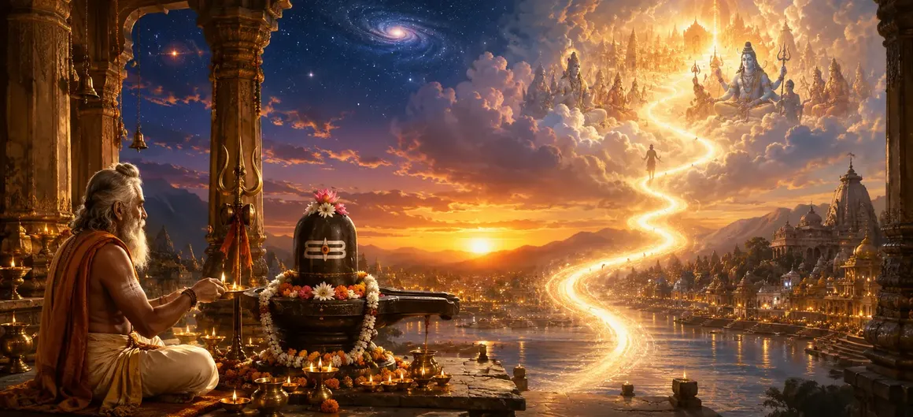

परलोक में लाभ के लिए संस्कार
वायवीय संहिता का अड़सठवाँ अध्याय मरणोपरांत मुक्ति, स्वर्गीय शांति और परमात्मा के साथ शाश्वत मिलन सुनिश्चित करने के लिए भगवान शिव को समर्पित गहन आध्यात्मिक अनुष्ठानों और अनुष्ठानों की रूपरेखा देता है।
ऋषि वायु बताते हैं कि कैसे विशिष्ट पूजा और आध्यात्मिक अनुशासन नश्वर सीमाओं को पार करते हैं, आत्मा को सांसारिक कष्टों से परे सर्वोच्च आनंद की ओर ले जाते हैं।
यह अध्याय परम आध्यात्मिक मुक्ति प्राप्त करने के लिए एक सर्वोच्च मार्गदर्शक के रूप में कार्य करता है।
अध्याय 68 की मुख्य बातें
आध्यात्मिक मुक्ति
परम आत्मा मुक्ति की ओर ले जाने वाले संस्कार।
इसके बाद आनंद
स्वर्गीय शांति और दिव्य निवास की प्राप्ति।
मुक्तिदायक बलिदान
कर्म बंधनों को शुद्ध करने वाले पवित्र अनुष्ठान।
शिव से मिलन
व्यक्तिगत चेतना को महादेव में विलीन करना।
ईश्वरीय कृपा
शिव के चरणों में शाश्वत आश्रय प्राप्त करना।
आगे का रास्ता
अध्याय 69 में विष्णु और ब्रह्मा के भ्रम की खोज।
इस अध्याय में मुख्य विषय
- 01भक्ति के माध्यम से नश्वर अस्तित्व को पार करना→
- 02मरणोपरांत शांति और उन्नति के लिए पवित्र अनुष्ठान→
- 03कर्म बंधनों और पुनर्जन्म चक्रों का शुद्धिकरण→
- 04सर्वोच्च परलोक फल के लिए जीवन कर्म समर्पित करना→
- 05शिवलोक में निवास की प्राप्ति→
- 06मोक्ष का परम अनुभव→
- 07अध्याय 69 की ओर (विष्णु और ब्रह्मा का भ्रम - भाग 1)→
भक्ति के माध्यम से नश्वर अस्तित्व को पार करना
ऋषि वायु ने भगवान शिव की समर्पित पूजा के माध्यम से प्राप्त होने वाले स्थायी, आत्मा-मुक्ति वाले फलों से अस्थायी सांसारिक पुरस्कारों को अलग करके प्रवचन शुरू किया।
सच्चा आध्यात्मिक अभ्यास शाश्वत शांति को सुरक्षित करने के लिए कब्र से परे दिखता है।
मरणोपरांत शांति और उन्नति के लिए पवित्र अनुष्ठान
अध्याय में विशिष्ट अनुष्ठानों, दान और मंत्र प्रथाओं का विवरण दिया गया है जो दिवंगत आत्मा को ऊपर उठाने और उसे पीड़ा के निचले स्तर से बचाने के लिए डिज़ाइन किए गए हैं।
शिव की कृपा मृत्यु की दहलीज पर एक परम ढाल के रूप में कार्य करती है।
कर्म बंधनों और पुनर्जन्म चक्रों का शुद्धिकरण
इसके बाद भक्तिपूर्वक अनुष्ठान करने से, संचित कर्म नष्ट हो जाते हैं, जिससे आत्मा को जन्म और मृत्यु के अंतहीन चक्रों से बांधने वाली भारी जंजीरें टूट जाती हैं।
अभ्यासी पूर्ण स्वतंत्रता के प्रकाश में कदम रखता है।
सर्वोच्च परलोक फल के लिए जीवन कर्म समर्पित करना
ऋषि वायु इस बात पर जोर देते हैं कि जीवन में किए गए प्रत्येक कार्य को महादेव को समर्पित किया जाना चाहिए ताकि यह सुनिश्चित हो सके कि इसके सूक्ष्म प्रभाव बंधन के बजाय आध्यात्मिक उन्नति प्रदान करते हैं।
समर्पण सामान्य कर्मों को स्वर्ग की ओर ले जाने वाली सीढ़ी में बदल देता है।
शिवलोक में निवास की प्राप्ति
जो भक्त इन परलोक संस्कारों में महारत हासिल कर लेते हैं, उन्हें शिवलोक में रहने का सौभाग्य प्राप्त होता है, जो शाश्वत प्रकाश और पारलौकिक आनंद से नहाया हुआ सर्वोच्च दिव्य क्षेत्र है।
यह लोक सभी दुःख, भय और क्षय से मुक्त है।
मोक्ष का परम अनुभव
स्वर्गीय निवास से परे अंतिम मुक्ति (मोक्ष) है, जिसमें आत्मा भगवान शिव के साथ अपनी पूर्ण पहचान का एहसास करती है, और अनंत ब्रह्मांडीय चेतना के साथ एक हो जाती है।
यह मानव आध्यात्मिक विकास के चरम का प्रतिनिधित्व करता है।
अध्याय 69 की ओर (विष्णु और ब्रह्मा का भ्रम - भाग 1)
अध्याय 68 में परलोक मुक्ति संस्कार की व्याख्या करने के बाद, ऋषि वायु अध्याय 69, 'विष्णु और ब्रह्मा का भ्रम - भाग 1' सुनाने की तैयारी करते हैं।
यह अगला अध्याय ब्रह्मा और विष्णु पर भगवान शिव की सर्वोच्च ब्रह्मांडीय सर्वोच्चता को दर्शाते हुए एक गहन कथा में बदल जाएगा।
अध्याय 68 की मुख्य शिक्षाएँ
आत्मा मुक्ति
अनुग्रह के माध्यम से नश्वर सीमाओं को पार करना।
शिवलोक निवास
महादेव के शाश्वत क्षेत्र तक पहुँचना।
कर्म विच्छेद
संस्कारों द्वारा पुनर्जन्म की जंजीरों को काटना।
समर्पित कृत्य
उच्च फल प्राप्त करने के लिए जीवन कर्मों की पेशकश करना।
पूर्ण मोक्ष
अनंत ब्रह्मांडीय चेतना में विलीन हो जाना।
कथा प्रस्तावना
अध्याय 69 विष्णु और ब्रह्मा की भ्रांति की स्थापना।
आध्यात्मिक चिंतन
जब हमारे आध्यात्मिक अनुष्ठान भगवान शिव की पारलौकिक कृपा के साथ जुड़ जाते हैं, तो मृत्यु एक आतंक नहीं रह जाती है और शाश्वत स्वतंत्रता का भव्य प्रवेश द्वार बन जाती है।
अध्याय 68 का संदेश जीना
अपने दैनिक कार्यों को भगवान शिव के परम चरणों में समर्पित करते हुए नश्वर जीवन की क्षणिक प्रकृति को याद रखें।
मृत्यु के भय पर विजय पाने के लिए आध्यात्मिक वैराग्य और गहरी भक्ति विकसित करें।
आंतरिक शुद्धता के लिए प्रयास करें जो आत्मा को परम मुक्ति के लिए तैयार करती है।
प्रमुख आध्यात्मिक अवधारणाएँ
उच्च मरणोपरांत स्थिति प्राप्त करने के लिए निर्धारित आध्यात्मिक अभ्यास।
परम मुक्ति प्रदान करने के लिए समर्पित पूजा अनुष्ठान।
समर्पित उपासना द्वारा संचित कर्मों का नाश।
शिव के दिव्य क्षेत्र में शाश्वत निवास की प्राप्ति।
व्यक्तिगत आत्मा और सर्वोच्च प्रभु के बीच एकता की अनुभूति।
पूर्ण आध्यात्मिक मुक्ति का सर्वोच्च फल।
अध्याय सारांश
वायवीय संहिता अध्याय 68 में मरणोपरांत मुक्ति प्राप्त करने, कर्म बंधनों को तोड़ने और परमात्मा के साथ अंतिम मिलन प्राप्त करने के लिए भगवान शिव को समर्पित गहन आध्यात्मिक अनुष्ठानों और अनुष्ठानों का विवरण दिया गया है। यह अध्याय अध्याय 69, 'विष्णु और ब्रह्मा का भ्रम - भाग 1' का मार्ग प्रशस्त करता है।
अक्सर पूछे जाने वाले प्रश्न
1. वायवीय संहिता अध्याय 68 का मुख्य विषय क्या है?
अध्याय 68 सर्वोच्च मुक्ति और मरणोपरांत कल्याण प्राप्त करने के लिए भगवान शिव को समर्पित आध्यात्मिक संस्कारों, अनुष्ठानों और प्रथाओं पर केंद्रित है।
2. शिव पूजा में पारलौकिक लाभ संस्कार क्यों महत्वपूर्ण हैं?
ये संस्कार अस्थायी सांसारिक लाभों से परे हैं, आत्मा को शाश्वत शांति, दिव्य मिलन और पुनर्जन्म के चक्र से मुक्ति की ओर मार्गदर्शन करते हैं।
3. इन मुक्ति संस्कारों को ऋषियों को कौन समझाता है?
ऋषि वायु ने इकट्ठे हुए ऋषियों को इन पवित्र पोस्टमार्टम और आध्यात्मिक प्रथाओं का विवरण दिया।
4. अध्याय 68 के बाद नेविगेशन के लिए अगला अध्याय कौन सा है?
नेविगेशन के लिए अगले अध्याय का शीर्षक 'विष्णु और ब्रह्मा का भ्रम - भाग 1' है।
"जब आत्मा सच्ची भक्ति और धार्मिक अनुष्ठानों के माध्यम से भगवान शिव की शरण लेती है, तो नश्वरता का भ्रम गायब हो जाता है, और शाश्वत आनंद का असीम सागर प्रकट हो जाता है।"
वायवीय संहिता के माध्यम से जारी रखें
अध्याय 68 परलोक में लाभ के लिए संस्कार का समापन करता है। विष्णु और ब्रह्मा का भ्रम जारी रखें - भाग 1।